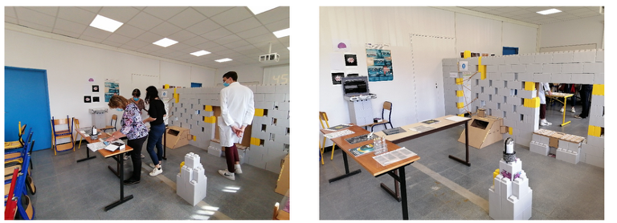
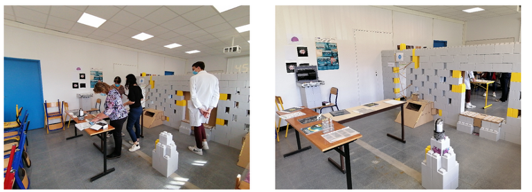

ImmunEscape est un escape game scientifique, développé à Toulouse, pour faire découvrir les mécanismes de l’immunité de manière ludique et immersive. En salle ou en réalité virtuelle, vivez une aventure inspirée de la recherche biomédicale.
Élèves, étudiants, enseignants, patients, curieux ou passionnés : le jeu s’adapte à tous les publics et s’intègre dans des contextes variés comme la formation, la médiation scientifique ou l’éducation thérapeutique.
Contactez-nous pour réserver une session, planifier un événement ou intégrer le jeu à vos programmes pédagogiques.
Nous contacterAccédez à la fiche complète du jeu à partager avec vos publics.
üìÑ T√©l√©charger la fiche (PDF)

 



Plus de 50 étudiantes et étudiants de licence, master et doctorat
Téléchargez l’application Android (APK) et suivez le guide pour l’installation dans un casque Oculus Quest.
üì≤ T√©l√©charger le jeu (APK)